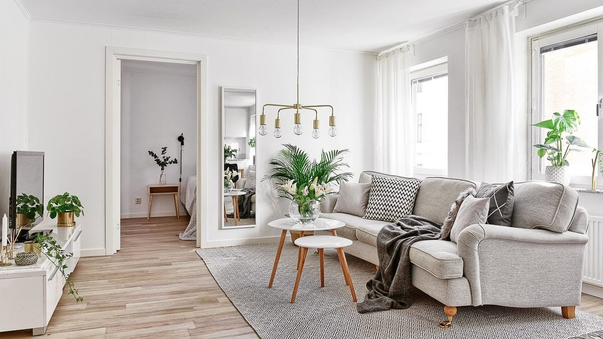
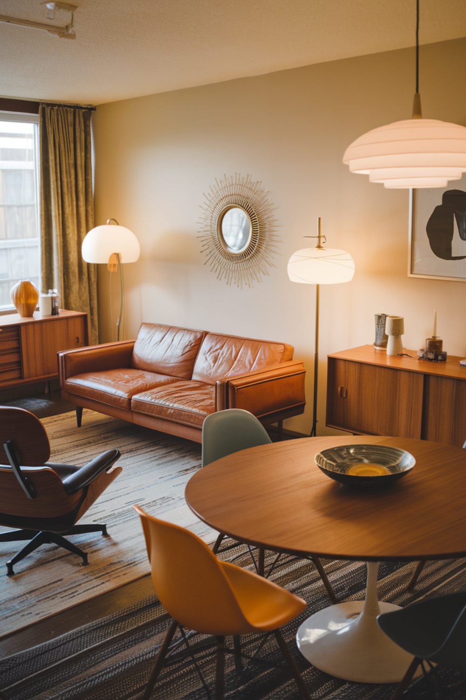
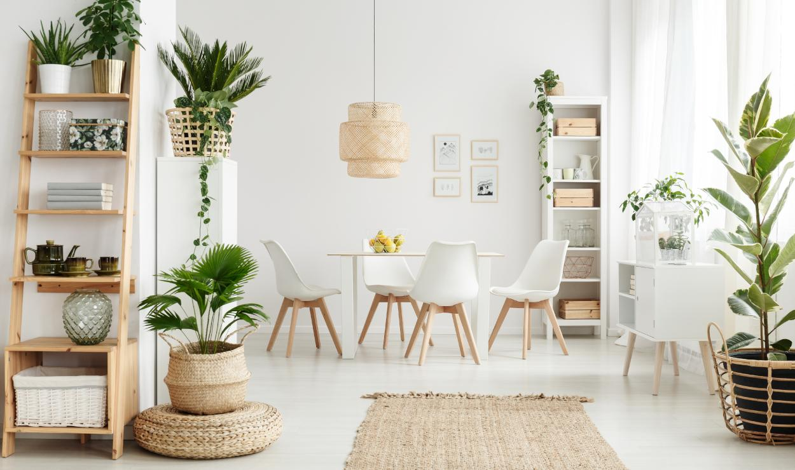

Скандинавский стиль

Основная цветовая гамма
Белый, серый, бежевый, светло-голубой, натуральное дерево
Краткое описание стиля
Эталон простоты, функциональности и демократичности. Его главная цель — создать светлое и уютное пространство с минимумом декора, используя натуральные материалы. Белые стены, деревянные полы и немного ярких акцентов — его визитная карточка.
Разновидности скандинавского стиля
| № | Разновидность стиля | Фото дизайна | Краткое описание |
|---|---|---|---|
| 1 | Mid-Century Modern |  |
Стиль 50-60-х годов с графичностью и элегантностью. Мебель на тонких металлических ножках, плавные формы, геометричные узоры. |
| 2 | Эко-сканди |  |
Акцент на экологичность: только натуральное дерево, камень, лен. Природная палитра (травяной зеленый, терракотовый) и комнатные растения. |